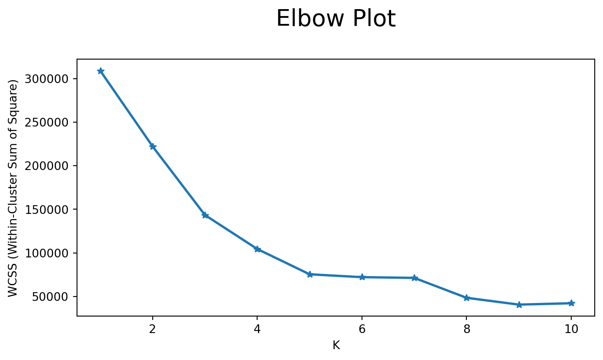

import numpy as np
import pandas as pd
import matplotlib.pyplot as plt
import seaborn as snsImage source: https://www.freepik.com
Introduction
What is clustering? Clustering in machine learning is an unsupervised learning technique that involves grouping a set of data points or objects into subsets, called clusters, based on the inherent patterns or similarities among the data1. For example, if we have a dataset containing information about mall customers, including attributes such as ‘Age,’ ‘Income,’ and ‘Spending Score,’ we input this dataset into the clustering algorithm. The algorithm then generates several clusters, considering the dataset’s characteristics and the parameters of the specific clustering algorithm employed.
Unsupervised Learning
As clustering is the a typical type of unsupervised learning alglrithm, it is important to first understand what unsupervised learning.
Unsupervised learning is the conceptual counterpart of supervised learning. It is a category of machine learning where the algorithm is tasked with finding patterns or structures in input data without explicit guidance or labeled output. Unlike supervised learning, there are no predefined target labels for the algorithm to learn from. The goal is to explore the inherent structure within the data, making it a form of self-discovery.
In unsupervised learning, the algorithm seeks to identify relationships, groupings, or representations within the data to uncover hidden patterns or insights. This can involve tasks such as clustering, where similar data points are grouped together, or dimensionality reduction, where the goal is to reduce the number of features while preserving essential information.
Clustering in Machine Learning
Similar to unsupervised learning, the primary objective of clustering is to organize the data in such a way that items within the same cluster are more similar to each other than to those in other clusters. Clustering does not rely on predefined labels for the data; instead, it discovers the structure within the data itself. Some of the examples of clustering application are listed below:
- Customer Segmentation: Grouping customers based on their purchasing behavior, preferences, or demographic information. For example,an e-commerce company might use clustering to identify segments of customers with similar buying patterns, allowing for targeted marketing strategies.
- Document Clustering: Organizing a collection of documents into groups based on their content or topic. For example, news articles on a website can be clustered into topics such as sports, politics, and entertainment.
- Anomaly Detection: Identifying unusual or unexpected patterns in data that do not conform to normal behavior. For example, monitoring network traffic and clustering unusual patterns to detect potential security threats.
- Social Network Analysis: Identifying communities or groups within a social network based on interactions between users. For example, Clustering users on a social media platform based on their connections and shared interests.
Clustering is a versatile technique in machine learning that finds applications across various domains, contributing to data exploration, pattern discovery, and decision-making based on inherent similarities within the data.
Clustering Algorithms
As listed above, clustering could be applied in various applications. Different applications have different data characteristics which might require different clustering algorithms. Typically, the clustering algorithms could be categorized into five types2:
Connectivity-based clustering:
Connectivity-based clustering focuses on the relationships or connections between data points in the feature space. It often involves methods that identify clusters based on the concept of connectivity which is essentially the distances between data points. One notable connectivity-based clustering algorithm is Hierarchical Agglomerative Clustering (HAC).
Centroid-based clustering:
Centroid-based clustering is a type of clustering algorithm that organizes data points into clusters based on the proximity to the centroid of each cluster. The centroid is a representative point that minimizes the sum of squared distances from itself to all points in the cluster. This type of clustering is commonly used in applications where clusters can be well approximated by their central points. One typical centroid-based clustering is K-Means Clustering.
Distribution-based clustering:
Distribution-based clustering, also known as model-based clustering, is a type of clustering algorithm that assumes that the data is generated from a mixture of probability distributions. The fundamental idea is that the data points are modeled as being generated from a combination of several underlying probability distributions, and the goal of the algorithm is to identify these distributions and assign data points to the most likely one. One popular algorithm in the category of distribution-based clustering is the Gaussian Mixture Model (GMM).
Density-based clustering:
Density-based clustering is a type of clustering algorithm that groups data points based on their density in the feature space. Unlike centroid-based clustering, which relies on the notion of central points, density-based clustering identifies dense regions of points and separates them from sparser regions. A prominent example of a density-based clustering algorithm is DBSCAN (Density-Based Spatial Clustering of Applications with Noise).
Grid-based clustering:
Grid-based clustering is a type of clustering algorithm that divides the data space into a set of cells, forming a grid structure. The primary idea is to use this grid to efficiently organize and analyze the data points, identifying dense regions or clusters based on the distribution of points within the cells. Grid-based clustering methods are particularly useful when dealing with large datasets or datasets with varying point densities. One well-known example of a grid-based clustering algorithm is STING (STatistical INformation Grid).
Applications in Customer Segmentation
In the section above, we briefly described five different types of clustering algorithms, but given the space, we can’t discuss them all in details in this post. We plan to use the two most popular algorithms, K-Means as well as DBSCAN to solve a real world problem, namely and as mentioned before, the Customer Segmentation.
In this Customer Segmentation task, we will use a data about the customers like the Customer ID, age, gender, income etc, the goal is break down the customers into a few distinct subgroups, so that, we can use the subgroups to understand the customers better and further apply different marketing strategy on different subgroups.
Methods
In this post, we’re going to use two of the most popular clustering algorithms, namely K-Means and DBSCAN for customer segmentation. The description of these two algorithms will be covered in this section.
K-Means
K-Means is a popular clustering algorithm that partitions a dataset into K distinct, non-overlapping subsets (clusters). Each data point belongs to the cluster with the nearest mean, serving as the prototype of the cluster. The algorithm minimizes the intra-cluster variance, aiming to create cohesive and well-separated clusters.
The optimization objective (loss function) introduced above could be expressed as3:
{\displaystyle J= \sum_{i=1}^{k}\sum_{j=1}^{n}\left\|\ {x_j} -c_{i}\right\|^{2}}
where:
J is the objective function which minimize the total squared distance of data points to their assigned cluster centroids.
k is the number of clusters.
n is the number of data points.
x_j is a data point.
c_i is the centroid of cluster i.
DBSCAN
DBSCAN is a density-based clustering algorithm that partitions a dataset into clusters based on the density of data points. Unlike K-Means, DBSCAN does not require specifying the number of clusters beforehand and can discover clusters of arbitrary shapes. It is particularly effective at identifying clusters in datasets with varying densities and handling noise.
DBSCAN optimizes the following loss function4:
Note
For any possible clustering {\displaystyle C=\{C_{1},\ldots ,C_{l}\}} out of the set of all clusterings {\displaystyle {\mathcal {C}}} it minimizes the number of clusters under the condition that every pair of points in a cluster is density-reachable, which corresponds to the original two properties “maximality” and “connectivity” of a cluster:
{\displaystyle \min _{C\subset {\mathcal {C}},~d_{db}(p,q)\leq \varepsilon ~\forall p,q\in C_{i}~\forall C_{i}\in C}|C|}
where {\displaystyle d_{db}(p,q)} gives the smallest {\displaystyle \varepsilon } such that two points p and q are density-connected.
For both the K-Means5 and DBSCAN6, we will use the implementation in the scikit-learn library.
Data
The data used in this post is the Mall Customers Data hosted on Github7. The dataset is distributed in csv file and consist of 5 columns. The columns name and its meaning are explained as below:
CustomerID: A string represents the identification number of the customer.
Gender: A categorical variable consist of two levels, male or female.
Age: An integer variable denotes the age of a customer.
Annual Income: An integer variable represents the annual income in kilo $.
Spending Score: An integer variable the customer being assigned based on their behavior and purchasing data.
Exploratory Data Analysis
Import the libraries we might use in this blog:
Now, load the data and rename the columns to get more readable names:
df = pd.read_csv("data/Mall_Customers.csv").rename(columns={
"Genre":"Gender",
"Annual Income (k$)":"AnnualIncome",
"Spending Score (1-100)":"SpendingScore"
})
df.head()| CustomerID | Gender | Age | AnnualIncome | SpendingScore | |
|---|---|---|---|---|---|
| 0 | 1 | Male | 19 | 15 | 39 |
| 1 | 2 | Male | 21 | 15 | 81 |
| 2 | 3 | Female | 20 | 16 | 6 |
| 3 | 4 | Female | 23 | 16 | 77 |
| 4 | 5 | Female | 31 | 17 | 40 |
Descriptive Statistics
Let’s take a look at the descriptive statistics:
df.describe()| CustomerID | Age | AnnualIncome | SpendingScore | |
|---|---|---|---|---|
| count | 200.000000 | 200.000000 | 200.000000 | 200.000000 |
| mean | 100.500000 | 38.850000 | 60.560000 | 50.200000 |
| std | 57.879185 | 13.969007 | 26.264721 | 25.823522 |
| min | 1.000000 | 18.000000 | 15.000000 | 1.000000 |
| 25% | 50.750000 | 28.750000 | 41.500000 | 34.750000 |
| 50% | 100.500000 | 36.000000 | 61.500000 | 50.000000 |
| 75% | 150.250000 | 49.000000 | 78.000000 | 73.000000 |
| max | 200.000000 | 70.000000 | 137.000000 | 99.000000 |
df.isnull().sum()CustomerID 0
Gender 0
Age 0
AnnualIncome 0
SpendingScore 0
dtype: int64There are no missing data, it is good for demonstration purpose since we can more focused on core parts, but please keep in mind that it is unlikely the scenario in real life applications where we put significant amount of time to clean and preprocessing the data before analysis and modeling stage.
Data Visualization
There is one category filed named Gender, it has two levels, male and female. There distribution of these two types are as follows:
gender_level_count = df['Gender'].value_counts()
labels = ['Male','Female']
plt.pie(gender_level_count, labels=labels, autopct='%.0f%%')
plt.show()There are slightly little more male than female. Let’s then, analysis the other three numerical fields:
sns.pairplot(df[["Gender", "Age", "AnnualIncome", "SpendingScore"]], hue='Gender', aspect=1.5, height=2.85)
plt.show()The plot above separates the data into male and female group and display the male group data distribution in blue and female group in yellow.
The diagonal represents the data distribution of the corresponding field, we can infer that:
- The distribution of all these fields is not perfectly normal distributed, but has a bell shape with one peak and descents at both left and right side.
- There is not significant subgroups if we only looks at one field.
If we examine each field individually:
Age group near 30-40 has the highest density.
Most of customers have income 40-90k.
Most of customers have spending score around 50.
If we check the subplots in pairs, we can find that there are no significant relationship between the pairs, except for the relationship between Annual Income and Spending Score , the data points are clearly divided into five subgroups.
Experiments
We now start clustering analysis with K-Means algorithm, we will use the sklearn library.
from sklearn.cluster import KMeans
from sklearn.cluster import DBSCANX = df[['Age', 'AnnualIncome', 'SpendingScore']]
wcss= []
for k in range(1, 11):
kmeans = KMeans(n_clusters = k, n_init='auto', init = 'k-means++')
kmeans.fit(X)
wcss.append(kmeans.inertia_)
plt.figure(figsize = (8, 4))
plt.plot(range(1, 11), wcss, linewidth = 2, marker='*')
plt.title('Elbow Plot\n', fontsize = 20)
plt.xlabel('K')
plt.ylabel('WCSS (Within-Cluster Sum of Square)')
plt.show()
From the elbow plot, we can infer that K=6 could be the best number of cluster. Let’s then use the number of clusters as 6 to train the K-Means and plot the distribution of predicted clusters using three dimension plot as follows:
import plotly.express as px
X = df[['Age', 'AnnualIncome', 'SpendingScore']]
kmeans = KMeans(n_clusters = 6, n_init='auto')
clusters = kmeans.fit_predict(X)
X['label'] = clusters
fig = px.scatter_3d(X, x="AnnualIncome", y="SpendingScore", z="Age",
color = 'label', size = 'label', width=750, height=600)
fig.show()We are now going to use the DBSCAN to carry out the clustering analysis:
from sklearn.cluster import DBSCAN
db = DBSCAN(eps=11, min_samples=6).fit(X)
X['label'] = clusters
fig = px.scatter_3d(X, x="AnnualIncome", y="SpendingScore", z="Age",
color = 'label', size = 'label', width=750, height=600)
fig.show()For DBSCAN we don’t need to choose the hyper parameter K anymore, the algorithm will divide the dataset into 5 clusters automatically, which is different than the result of K-Means (6 clusters).
Discussion and Conclusion
In this plot, we introduced the clustering algorithm as a classical type of unsupervised learning and applied two clustering techniques, namely K-Means and DBSCAN in the customer segmentation task. Our analysis and visualization shows the steps and differences between these two algorithms when applied in real world problems.
Both the K-Means and DBSCAN aim to group similar data points together into clusters based on the data characteristics. They are both unsupervised learning techniques, meaning they don’t rely on labeled training data and instead can discover patterns or structure within the data itself.
While K-Means and DBSCAN share lots of traits in nature, here we wanted to mention some of the key differences between K-Means and DBSCAN:
Algorithm Type:
K-Means is a centroid-based clustering algorithm. It aims to partition data into K clusters, where each cluster is represented by its centroid.
DBSCAN is a density-based clustering algorithm. It groups together data points that are close to each other and have a sufficient number of neighboring points.
Cluster Number:
K-Means requires the user to specify the number of clusters (K) beforehand, and it assigns each data point to the nearest centroid.
DBSCAN does not require the user to specify the number of clusters. It automatically discovers clusters based on the density of data points.
Handling Noisy Data:
K-Means sensitive to outliers and noise because it tries to assign all data points to a cluster, even if they do not belong to any clear cluster.
DBSCAN can identify and label outliers as noise, making it more robust to outliers and better at handling data with varying densities.
Parameter Sensitivity:
K-Means is sensitive to the initial placement of centroids, and the final result may depend on the initial cluster centers.
DBSCAN is less sensitive to the choice of parameters, such as the density threshold and the minimum number of points required to form a cluster.
In summary, K-Means is suitable for well-defined, spherical clusters with a predetermined number of clusters, while DBSCAN is more flexible, handling clusters of arbitrary shapes and automatically determining the number of clusters based on data density. The choice between them depends on the characteristics of the data and the desired properties of the clusters.
Footnotes
Beer, Anna; Draganov, Andrew; Hohma, Ellen; Jahn, Philipp; Frey, Christian M.M.; Assent, Ira (6 August 2023). “Connecting the Dots -- Density-Connectivity Distance unifies DBSCAN, k-Center and Spectral Clustering”. Proceedings of the 29th ACM SIGKDD Conference on Knowledge Discovery and Data Mining. ACM. pp. 80–92. doi:10.1145/3580305.3599283. ISBN 9798400701030. S2CID 260499476↩︎
https://scikit-learn.org/stable/modules/generated/sklearn.cluster.KMeans.html↩︎
https://scikit-learn.org/stable/modules/generated/sklearn.cluster.DBSCAN.html↩︎
https://github.com/SteffiPeTaffy/machineLearningAZ/blob/master/Machine%20Learning%20A-Z%20Template%20Folder/Part%204%20-%20Clustering/Section%2025%20-%20Hierarchical%20Clustering/Mall_Customers.csv↩︎